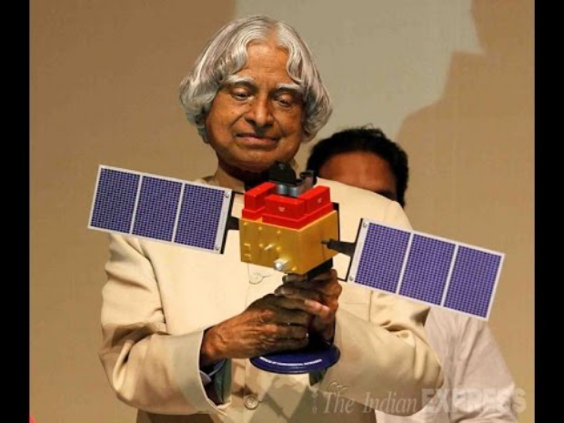

Dr. Kalam was popularly known as the ‘Missile Man’ for the initiatives he took during his association with the Defence Research and Development Organisation (DRDO) and the Indian Space Research Organisation (ISRO).
Technologies developed by him are being used by the organizations even in present times. He was a firm believer of his famous quote “Excellence is a continuous process and not an accident,” that was also seen in his work in DRDO and ISRO in order to make India a superpower in space science and technology.
Dr Kalam started his career at DRDO after graduating from the Madras Institute of Technology.He joined the Aeronautical Development Establishment (ADE) of the Defence Research and Development Organisation as a scientist after becoming a member of the Defence Research and Development Service (DRDS).
Dr. Kalam apparently started his career by designing a small hovercraft at DRDO. In 1965, he independently started work on an expandable rocket project at the institution, and in 1969 he received the government’s approval and expanded the programme to include more engineers.
During his tenure at DRDO, Kalam directed two projects namely Project Devil and Project Valiant, which aimed at developing ballistic missiles from the technology of the SLV programme.
Dr. Kalam was chief executive of Integrated Guided Missile Development Programme (IGMDP) and played an instrumental role in developing missiles like Agni and Prithvi. Pokhran-II nuclear tests, which were carried out during Dr. Kalam’s stint as the Chief Scientific Adviser to the Prime Minister and Secretary of the Defence Research and Development Organisation from July 1992 to December 1999.
Dr Kalam was part of the Indian National Committee for Space Research (INCOSPAR), which was set up by Dr. Vikram Sarabhai, father of Indian space programme.
Dr. Kalam was a part of INCOSPAR, the team of rocket engineers which set up the Thumba Equatorial Rocket Launching Station (TERLS) that is used by ISRO to launch sounding rockets even today.
Dr. Kalam was also the project director of India’s first Satellite Launch Vehicle (SLV-III) which successfully deployed the Rohini satellite in near-earth orbit. Kalam has also played a contributory role in the development of Polar Satellite Launch Vehicle (PSLV).
